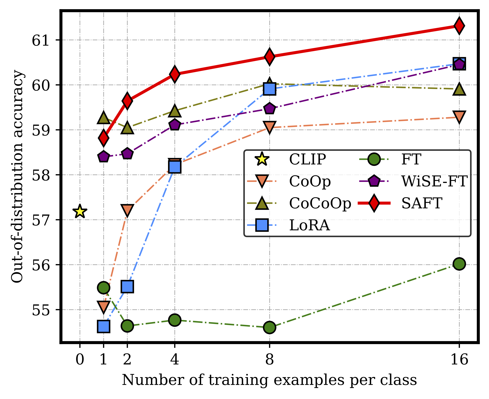
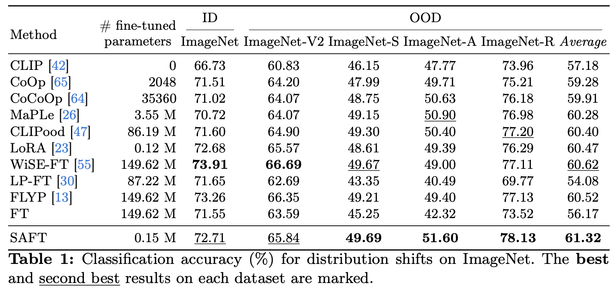

Experiments
Generalization to Distribution Shifts
We show the comparison of SAFT against other baseline methods in terms of OOD accuracy. The training dataset is ImageNet and the validation is conducted on distribution-shift variants of ImageNet. Under different few-shot learning settings, our method consistently and significantly demonstrates superior generalization capabilities.

